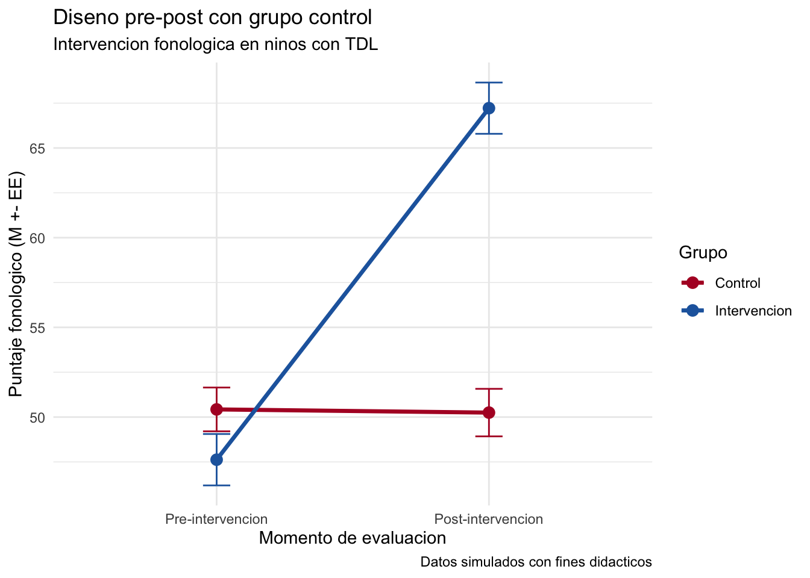

El diseño de investigación es la traducción metodológica de la pregunta planteada. No se trata solo de elegir una etiqueta, sino de definir cómo se observará el fenómeno, con qué comparaciones, en qué momento y bajo qué supuestos. Una misma pregunta mal alineada con el diseño puede producir conclusiones débiles, aun cuando la redacción del manuscrito sea prolija.
En fonoaudiología, esta decisión es especialmente relevante porque muchas preguntas emergen de contextos aplicados: centros de salud, escuelas, programas de tamizaje, consultas ambulatorias o procesos de rehabilitación. Eso obliga a equilibrar rigurosidad, factibilidad y pertinencia clínica (Creswell, Creswell, 2023).
6 Enfoques de investigación
El enfoque cuantitativo busca medir variables, estimar magnitudes, comparar grupos y modelar asociaciones. El enfoque cualitativo explora experiencias, significados, barreras, percepciones y procesos. Los diseños mixtos combinan ambos enfoques cuando una sola estrategia no basta para responder de manera satisfactoria la pregunta.
En una tesis de fonoaudiología, no conviene elegir el enfoque por preferencia personal ni por familiaridad con una técnica. Conviene elegirlo según el tipo de conocimiento buscado. Si el interés está en estimar diferencias en puntajes de conciencia fonológica, el abordaje cuantitativo es coherente. Si la pregunta se centra en cómo viven las familias la incorporación de comunicación aumentativa y alternativa, el enfoque cualitativo puede ser más pertinente.
Nota
Concepto clave: El diseño no se decide al final de la planificación. Se define desde el momento en que la pregunta de investigación empieza a delimitar qué evidencia será considerada suficiente.
Cuando la pregunta busca evaluar intervenciones, aparecen los diseños experimentales y cuasi-experimentales. En contextos de pregrado, lo más frecuente es trabajar con diseños pre-post, con o sin grupo control, debido a restricciones éticas, logísticas o institucionales. Aunque estos diseños tienen menor control sobre amenazas a la validez interna que un ensayo aleatorizado, siguen siendo útiles si sus limitaciones se explicitan con honestidad.
8 Diseños cualitativos y mixtos
Los diseños cualitativos pueden ser útiles para explorar experiencia de uso de audífonos, percepción familiar de una intervención temprana, barreras de acceso a rehabilitación o significados atribuidos al diagnóstico. En este tipo de estudios, la profundidad interpretativa suele ser más importante que el tamaño muestral.
Los diseños mixtos son apropiados cuando se requiere combinar estimaciones cuantitativas con comprensión contextual. Por ejemplo, una investigación puede cuantificar cambios en desempeño lector y, además, describir cómo docentes y familias perciben la implementación de una intervención. En personas mayores, también podría combinarse una medición de comprensión del habla en ruido y rendimiento cognitivo con entrevistas sobre esfuerzo auditivo, fatiga comunicativa y participación social. Este tipo de articulación es especialmente pertinente cuando la literatura muestra relaciones complejas entre edad, memoria de trabajo, control inhibitorio y reconocimiento del habla en ruido (Stenbäck, Marsja, Hällgren, Lyxell, Larsby, 2021; Mussoi, 2021).
Importante
Para recordar: Ningún diseño es “el mejor” en abstracto. Un buen diseño es el que responde con coherencia a la pregunta planteada, explicita sus supuestos y reconoce sus limitaciones.
9 Diseños habituales en fonoaudiología
El estudio de caso único resulta útil cuando la intervención se aplica de manera intensiva y personalizada. El diseño pre-post sin control es común en estudios piloto. El pre-post con grupo control permite una comparación más robusta, aunque no siempre hay asignación aleatoria. Estudios de cohorte transversales o longitudinales son frecuentes para describir perfiles clínicos, asociaciones entre variables o trayectorias de envejecimiento. Los estudios de validación de instrumentos son fundamentales cuando se adaptan pruebas para población chilena o hispanohablante. Las revisiones sistemáticas sintetizan evidencia ya publicada y son de alto valor cuando la pregunta se orienta a efectividad o estado del arte.
Una clave pedagógica para el estudiante es entender que cada diseño responde mejor a ciertos verbos de investigación. “Describir” no exige el mismo control metodológico que “determinar el efecto”. Del mismo modo, “explorar percepciones” no requiere la misma lógica que “comparar resultados post-intervención”.
10 Criterios para elegir el diseño adecuado
La elección del diseño debe considerar al menos cinco dimensiones: naturaleza de la pregunta, disponibilidad de muestra, acceso a comparación, seguimiento temporal y nivel de inferencia deseado. Si no existe grupo de comparación factible, una tesis puede seguir siendo valiosa, pero debe ajustar su alcance interpretativo. Del mismo modo, si la muestra es pequeña, quizá conviene priorizar un estudio piloto, de caso único o una investigación descriptiva bien justificada.
Tip
Consejo para tu tesis: Antes de comprometerte con un diseño, intenta completar esta frase por escrito: “Con este diseño podré responder mi pregunta porque…”. Si la justificación suena forzada, probablemente aún falta alinear pregunta, muestra y estrategia analítica.
10.1 Visualizacion de un diseno pre-post
Código
# Visualizacion de un diseno pre-post con grupo controllibrary(tidyverse)set.seed(123)datos_prepost <-tibble(id =1:60,grupo =rep(c("Intervencion", "Control"), each =30),pre =c(rnorm(30, 48, 8), rnorm(30, 49, 8)),post =c(rnorm(30, 67, 9), rnorm(30, 51, 8))) |>pivot_longer(cols =c(pre, post), names_to ="tiempo", values_to ="puntaje") |>mutate(tiempo =factor( tiempo,levels =c("pre", "post"),labels =c("Pre-intervencion", "Post-intervencion") ) )ggplot(datos_prepost, aes(x = tiempo, y = puntaje, group = grupo, color = grupo)) +stat_summary(fun = mean, geom ="line", linewidth =1.2) +stat_summary(fun = mean, geom ="point", size =3) +stat_summary(fun.data = mean_se, geom ="errorbar", width =0.1) +labs(title ="Diseno pre-post con grupo control",subtitle ="Intervencion fonologica en ninos con TDL",x ="Momento de evaluacion",y ="Puntaje fonologico (M +- EE)",color ="Grupo",caption ="Datos simulados con fines didacticos" ) +scale_color_manual(values =c("Intervencion"="#2166AC", "Control"="#B2182B")) +theme_minimal()

Tabla 4
Diseños habituales en fonoaudiología
Diseño
Características
Cuándo usarlo
Limitación principal
Caso único
N pequeño, mediciones repetidas, fases A-B o A-B-A
Intervenciones individualizadas o innovadoras
Baja generalización externa
Pre-post sin control
Medición antes y después de intervenir
Estudios piloto o contextos con recursos limitados
No permite atribución causal fuerte
Pre-post con control
Comparación entre grupo intervenido y grupo de referencia
Evaluación aplicada de efectividad
Posible sesgo por no aleatorizar
Validación de instrumento
Evidencia de estructura, consistencia e interpretación
Adaptar pruebas clínicas o educativas
Requiere muestra suficiente y análisis específicos
Revisión sistemática
Síntesis con criterios explícitos y reproducibles
Resumir evidencia sobre evaluación o intervención
Depende de la calidad de estudios primarios
Tabla 5
Criterios para elegir el diseno
Pregunta de investigacion
Diseno recomendado
Nivel de evidencia
Cual es el perfil linguistico de ninos con TDL en Chile?
Descriptivo transversal
Bajo
Existe asociacion entre vocabulario y comprension lectora?
Correlacional transversal
Moderado
Difieren los umbrales auditivos entre grupos?
Comparativo o caso-control
Moderado
Que predice la adherencia al uso de audifonos?
Regresion o correlacional
Moderado
Es efectiva una intervencion fonologica?
Cuasi-experimental pre-post
Moderado-alto
Como viven las familias el proceso de rehabilitacion auditiva?
Cualitativo fenomenologico o tematico
Complementario
Como se relacionan audicion y cognicion en personas mayores a lo largo del tiempo?
Longitudinal observacional
Moderado
Tabla 6
Amenazas frecuentes a la validez y como anticiparlas
Amenaza
En que consiste
Ejemplo en fonoaudiologia
Estrategia de resguardo
Sesgo de seleccion
Los grupos no son equivalentes al inicio
Grupo intervencion con mayor severidad basal
Describir baseline y ajustar analisis
Maduracion
El cambio ocurre por paso del tiempo
Mejoras evolutivas en desarrollo del lenguaje
Usar comparacion o seguimiento apropiado
Instrumentacion
Cambia la forma de medir
Distinta pauta entre evaluadores
Estandarizar aplicacion y entrenamiento
Perdida de seguimiento
Participantes abandonan el estudio
Menor asistencia a reevaluacion post o seguimiento en personas mayores
Reportar attrition y sus posibles efectos
John W. Creswell y J. David Creswell (2023). Research Design: Qualitative, Quantitative, and Mixed Methods Approaches. SAGE.
Frank R. Lin, Kristine Yaffe, Jin Xia, Qian-Li Xue, Tamara B. Harris, Elizabeth Purchase-Helzner, Suzanne Satterfield, Hilsa N. Ayonayon, Luigi Ferrucci, y Eleanor M. Simonsick (2013). Hearing loss and cognitive decline in older adults. JAMA Internal Medicine.
---title: "Capítulo 3. Tipos de diseño de investigación"---# Por qué el diseño importaEl diseño de investigación es la traducción metodológica de la pregunta planteada. No se trata solo de elegir una etiqueta, sino de definir cómo se observará el fenómeno, con qué comparaciones, en qué momento y bajo qué supuestos. Una misma pregunta mal alineada con el diseño puede producir conclusiones débiles, aun cuando la redacción del manuscrito sea prolija.En fonoaudiología, esta decisión es especialmente relevante porque muchas preguntas emergen de contextos aplicados: centros de salud, escuelas, programas de tamizaje, consultas ambulatorias o procesos de rehabilitación. Eso obliga a equilibrar rigurosidad, factibilidad y pertinencia clínica [@creswell2023].# Enfoques de investigaciónEl enfoque cuantitativo busca medir variables, estimar magnitudes, comparar grupos y modelar asociaciones. El enfoque cualitativo explora experiencias, significados, barreras, percepciones y procesos. Los diseños mixtos combinan ambos enfoques cuando una sola estrategia no basta para responder de manera satisfactoria la pregunta.En una tesis de fonoaudiología, no conviene elegir el enfoque por preferencia personal ni por familiaridad con una técnica. Conviene elegirlo según el tipo de conocimiento buscado. Si el interés está en estimar diferencias en puntajes de conciencia fonológica, el abordaje cuantitativo es coherente. Si la pregunta se centra en cómo viven las familias la incorporación de comunicación aumentativa y alternativa, el enfoque cualitativo puede ser más pertinente.::: {.callout-note}**Concepto clave:** El diseño no se decide al final de la planificación. Se define desde el momento en que la pregunta de investigación empieza a delimitar qué evidencia será considerada suficiente.:::# Diseños cuantitativos más frecuentesLos estudios descriptivos permiten caracterizar perfiles clínicos, desempeño comunicativo o distribución de variables audiológicas. Los estudios correlacionales examinan asociaciones entre variables, pero no permiten establecer causalidad por sí solos. Los estudios comparativos contrastan grupos y ayudan a examinar diferencias clínicamente relevantes. Los estudios longitudinales agregan información temporal, lo que fortalece la interpretación de trayectorias o cambios. Este último punto es especialmente valioso en investigaciones sobre envejecimiento, donde puede interesar seguir la relación entre audición, cognición y participación comunicativa a lo largo del tiempo [@lin2013hearing; @lin2023achieve].Cuando la pregunta busca evaluar intervenciones, aparecen los diseños experimentales y cuasi-experimentales. En contextos de pregrado, lo más frecuente es trabajar con diseños pre-post, con o sin grupo control, debido a restricciones éticas, logísticas o institucionales. Aunque estos diseños tienen menor control sobre amenazas a la validez interna que un ensayo aleatorizado, siguen siendo útiles si sus limitaciones se explicitan con honestidad.# Diseños cualitativos y mixtosLos diseños cualitativos pueden ser útiles para explorar experiencia de uso de audífonos, percepción familiar de una intervención temprana, barreras de acceso a rehabilitación o significados atribuidos al diagnóstico. En este tipo de estudios, la profundidad interpretativa suele ser más importante que el tamaño muestral.Los diseños mixtos son apropiados cuando se requiere combinar estimaciones cuantitativas con comprensión contextual. Por ejemplo, una investigación puede cuantificar cambios en desempeño lector y, además, describir cómo docentes y familias perciben la implementación de una intervención. En personas mayores, también podría combinarse una medición de comprensión del habla en ruido y rendimiento cognitivo con entrevistas sobre esfuerzo auditivo, fatiga comunicativa y participación social. Este tipo de articulación es especialmente pertinente cuando la literatura muestra relaciones complejas entre edad, memoria de trabajo, control inhibitorio y reconocimiento del habla en ruido [@stenback2021contribution; @mussoi2021impact].::: {.callout-important}**Para recordar:** Ningún diseño es "el mejor" en abstracto. Un buen diseño es el que responde con coherencia a la pregunta planteada, explicita sus supuestos y reconoce sus limitaciones.:::# Diseños habituales en fonoaudiologíaEl estudio de caso único resulta útil cuando la intervención se aplica de manera intensiva y personalizada. El diseño pre-post sin control es común en estudios piloto. El pre-post con grupo control permite una comparación más robusta, aunque no siempre hay asignación aleatoria. Estudios de cohorte transversales o longitudinales son frecuentes para describir perfiles clínicos, asociaciones entre variables o trayectorias de envejecimiento. Los estudios de validación de instrumentos son fundamentales cuando se adaptan pruebas para población chilena o hispanohablante. Las revisiones sistemáticas sintetizan evidencia ya publicada y son de alto valor cuando la pregunta se orienta a efectividad o estado del arte. Una clave pedagógica para el estudiante es entender que cada diseño responde mejor a ciertos verbos de investigación. "Describir" no exige el mismo control metodológico que "determinar el efecto". Del mismo modo, "explorar percepciones" no requiere la misma lógica que "comparar resultados post-intervención".# Criterios para elegir el diseño adecuadoLa elección del diseño debe considerar al menos cinco dimensiones: naturaleza de la pregunta, disponibilidad de muestra, acceso a comparación, seguimiento temporal y nivel de inferencia deseado. Si no existe grupo de comparación factible, una tesis puede seguir siendo valiosa, pero debe ajustar su alcance interpretativo. Del mismo modo, si la muestra es pequeña, quizá conviene priorizar un estudio piloto, de caso único o una investigación descriptiva bien justificada.::: {.callout-tip}**Consejo para tu tesis:** Antes de comprometerte con un diseño, intenta completar esta frase por escrito: "Con este diseño podré responder mi pregunta porque...". Si la justificación suena forzada, probablemente aún falta alinear pregunta, muestra y estrategia analítica.:::## Visualizacion de un diseno pre-post```{r}# Visualizacion de un diseno pre-post con grupo controllibrary(tidyverse)set.seed(123)datos_prepost <-tibble(id =1:60,grupo =rep(c("Intervencion", "Control"), each =30),pre =c(rnorm(30, 48, 8), rnorm(30, 49, 8)),post =c(rnorm(30, 67, 9), rnorm(30, 51, 8))) |>pivot_longer(cols =c(pre, post), names_to ="tiempo", values_to ="puntaje") |>mutate(tiempo =factor( tiempo,levels =c("pre", "post"),labels =c("Pre-intervencion", "Post-intervencion") ) )ggplot(datos_prepost, aes(x = tiempo, y = puntaje, group = grupo, color = grupo)) +stat_summary(fun = mean, geom ="line", linewidth =1.2) +stat_summary(fun = mean, geom ="point", size =3) +stat_summary(fun.data = mean_se, geom ="errorbar", width =0.1) +labs(title ="Diseno pre-post con grupo control",subtitle ="Intervencion fonologica en ninos con TDL",x ="Momento de evaluacion",y ="Puntaje fonologico (M +- EE)",color ="Grupo",caption ="Datos simulados con fines didacticos" ) +scale_color_manual(values =c("Intervencion"="#2166AC", "Control"="#B2182B")) +theme_minimal()```Tabla 4*Diseños habituales en fonoaudiología*| Diseño | Características | Cuándo usarlo | Limitación principal ||---|---|---|---|| Caso único | N pequeño, mediciones repetidas, fases A-B o A-B-A | Intervenciones individualizadas o innovadoras | Baja generalización externa || Pre-post sin control | Medición antes y después de intervenir | Estudios piloto o contextos con recursos limitados | No permite atribución causal fuerte || Pre-post con control | Comparación entre grupo intervenido y grupo de referencia | Evaluación aplicada de efectividad | Posible sesgo por no aleatorizar || Validación de instrumento | Evidencia de estructura, consistencia e interpretación | Adaptar pruebas clínicas o educativas | Requiere muestra suficiente y análisis específicos || Revisión sistemática | Síntesis con criterios explícitos y reproducibles | Resumir evidencia sobre evaluación o intervención | Depende de la calidad de estudios primarios |Tabla 5*Criterios para elegir el diseno*| Pregunta de investigacion | Diseno recomendado | Nivel de evidencia ||---|---|---|| Cual es el perfil linguistico de ninos con TDL en Chile? | Descriptivo transversal | Bajo || Existe asociacion entre vocabulario y comprension lectora? | Correlacional transversal | Moderado || Difieren los umbrales auditivos entre grupos? | Comparativo o caso-control | Moderado || Que predice la adherencia al uso de audifonos? | Regresion o correlacional | Moderado || Es efectiva una intervencion fonologica? | Cuasi-experimental pre-post | Moderado-alto || Como viven las familias el proceso de rehabilitacion auditiva? | Cualitativo fenomenologico o tematico | Complementario || Como se relacionan audicion y cognicion en personas mayores a lo largo del tiempo? | Longitudinal observacional | Moderado |Tabla 6*Amenazas frecuentes a la validez y como anticiparlas*| Amenaza | En que consiste | Ejemplo en fonoaudiologia | Estrategia de resguardo ||---|---|---|---|| Sesgo de seleccion | Los grupos no son equivalentes al inicio | Grupo intervencion con mayor severidad basal | Describir baseline y ajustar analisis || Maduracion | El cambio ocurre por paso del tiempo | Mejoras evolutivas en desarrollo del lenguaje | Usar comparacion o seguimiento apropiado || Instrumentacion | Cambia la forma de medir | Distinta pauta entre evaluadores | Estandarizar aplicacion y entrenamiento || Perdida de seguimiento | Participantes abandonan el estudio | Menor asistencia a reevaluacion post o seguimiento en personas mayores | Reportar attrition y sus posibles efectos |